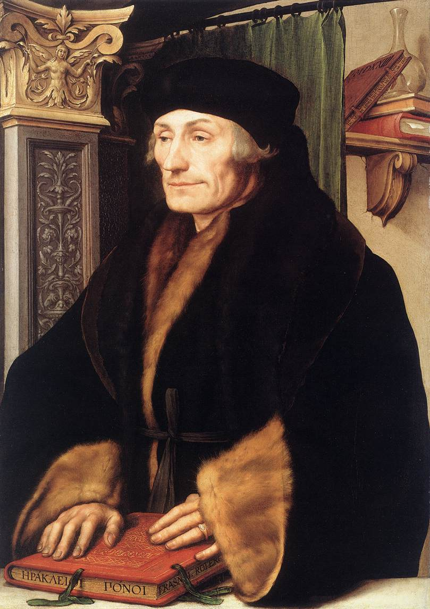
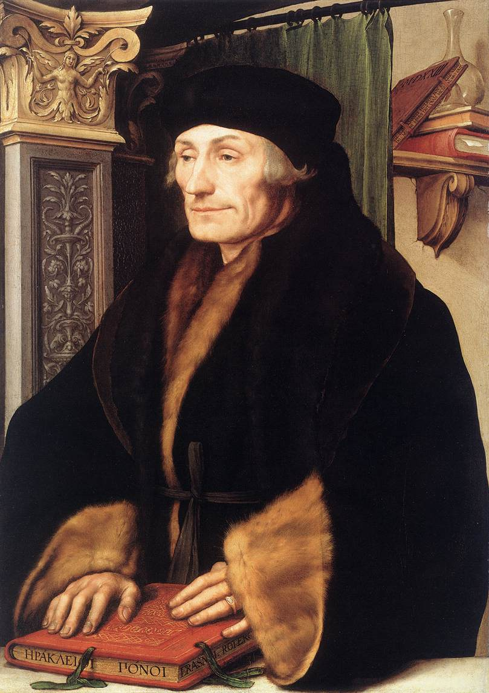

La sociedad como resultado de causas naturales, la sociedad es movida por el interés y por la fuerza. Aprobaba la crueldad en la lucha por el poder porque "El poder no es más que el dominio sobre los hombres". No estoy de acuerdo en el uso de la crueldad pero sí de la fuerza, hay formas de aplicarla sin llegar a tales extremos.
Para Cusa la realidad tiene dos niveles lo que ve el ojo humano y lo que ve el ojo invidente de Dios; en el que el ojo humano es lo que percibimos con nuestros ojos y el ojo de Dios es lo que vemos hacia la trascendencia. En este punto no estoy de acuerdo porque considero que no hay dos niveles en la realidad si no que es uno mismo el que lo percibe mediante sus sentidos.
Si la contradicción y el movimiento son esencia de la realidad, Montaigne habrá de aprender a conducirse sabiéndose él mismo contradicción, luego no se trata de superarla definitivamente, sino de que la condición humana no impida el ejercicio mismo de la vida. Se trata de vivir a pesar de nuestra mala y pésima condición..
La realidad de galileo se basaba en procedimientos empíricos y de esa forma arrojar un resultado meramente lógico basado en la naturaleza material y su respuesta a los estímulos que originarían sensaciones subjetivas como: colores, olores, temperaturas etc. Concuerdo mayormente con la idea de galileo, sin embargo él se centraba mayormente es sensaciones representadas de forma material sin embargo no toda realidad es perceptible de manera material. .
Ideó con mucha certeza el estado de las almas después de la muerte en tres diferentes áreas: el infierno, el purgatorio y el cielo.
El principio de todo lo existente es la unidad absoluta, lo Uno, llamada realidad suprema o gran vacuidad, de la que surgen todas las demás realidades por emanación.
Considera a la naturaleza como la cosa más pura que existe, y decreta que la naturaleza no puede ser dominada, si no que se tiene que adaptar a las leyes de esta.
Para el existe la realidad palpable y física sin desligarse de ese otro lado intangible donde el espíritu alberga después de existir..